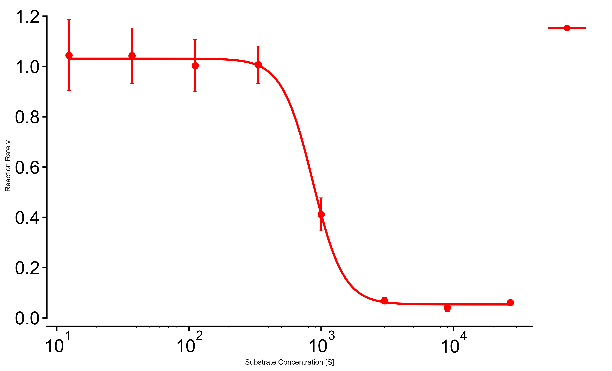

Bardrawing_yh/bar/horizontal/main.py Horizontal bar 排序比较、top-N 指标、富集结果横向展示。 适合标签较长的类别。 bar ranking 原图源码/示例
Bardrawing_yh/bar/enrichment_bar/enrichment_bar.py Enrichment bar GO / KEGG / Reactome 富集结果。 通常用 -log10(FDR) 或 enrichment score 排序。 bar enrichment 原图源码/示例
Bardrawing_yh/bar/waterfall/waterfall.py Waterfall 按方向和幅度排序的连续变化。 适合展示个体、基因或通路的正负变化。 bar waterfall 原图源码/示例
Distributionexample_gallery/build_gallery.py Box plot 组间分布与离散程度。 可叠加散点显示样本量。 box distribution 原图源码/示例
Distributiondrawing_yh/violin_plot/violin_function.py Violin plot 连续变量的密度分布。 比 box plot 更突出分布形状。 violin distribution 原图源码/示例
Scatterexample_gallery/build_gallery.py Scatter + linear fit 年龄相关、相关性、回归趋势。 点表示样本，线表示拟合趋势。 scatter correlation 原图源码/示例
Scatterexample_gallery/build_gallery.py Bubble plot 二维类别矩阵 + 第三变量大小。 颜色和气泡大小可同时编码。 bubble matrix 原图源码/示例
Scatterexample_gallery/build_gallery.py Rank plot 候选基因、通路、feature 的排序。 适合强调 top candidates。 rank candidate 原图源码/示例
Scatterdrawing_yh/scatter/dot_chart/dot_chart.py Dot chart 蛋白/代谢物跨组织或分组点图。 可用颜色、位置、显著性共同编码。 dot summary 原图源码/示例
Omicsdrawing_yh/dotplot.py Marker dot plot 单细胞 marker 表达矩阵。 颜色=gene-scaled mean，大小=pct expressed。 single-cell marker dotplot 原图源码/示例
Omicsdrawing_yh/dumbbell.py Dumbbell chart Young vs Old 或处理前后均值比较。 箭头方向编码升降，适合通讯强度或 pathway score。 dumbbell comparison 原图源码/示例
Omicsdrawing_yh/volcano_plot/volcano.py Volcano plot 差异分析结果，logFC × p-value。 适合快速筛选显著上/下调。 volcano DEG 原图源码/示例
Heatmapdrawing_yh/heatmap/heatmap_clustered/heapmap_clustered.py Clustered heatmap 矩阵聚类、表达模式、样本/基因分组。 适合 feature 数中等的全局模式。 heatmap cluster 原图源码/示例
Heatmapdrawing_yh/heatmap/heatmap_tile_style/heatmap_tile_style.py Tile heatmap 通路 × 细胞类型、组织 × feature 的紧凑矩阵。 适合报告里快速比较方向。 heatmap tile 原图源码/示例
Heatmapdrawing_yh/dose_response/heatmap_with_colorbar.py Dose-response heatmap 药物浓度 × 组合条件矩阵。 适合筛选敏感窗口。 dose-response heatmap 原图源码/示例
Compositiondrawing_yh/pie_chart/pie/main.py Pie chart 少量类别的组成比例。 类别过多时优先换 bar plot。 pie composition 原图源码/示例
Compositiondrawing_yh/pie_chart/donut/main.py Donut chart 组成比例 + 中心注释。 比普通 pie 更适合放总数或标签。 donut composition 原图源码/示例
Compositiondrawing_yh/pie_chart/explode/main.py Exploded pie 强调某一个组成部分。 只适合非常明确的 highlight。 pie highlight 原图源码/示例
Compositiondrawing_yh/pie_chart/zoom_pie/main.py Zoom pie 大类 + 小类局部放大。 适合比例悬殊但又要展示小类。 pie zoom 原图源码/示例
Compositiondrawing_yh/venn/venn_plot.py Venn diagram 2-3 个集合交集。 集合大小悬殊时可用 equal/log 模式。 venn set 原图源码/示例
 Curvedrawing_yh/dose_response/main.py Dose-response curve 药物浓度-效应曲线。 适合 IC50/viability 展示。 curve dose-response 原图源码/示例
Curvedrawing_yh/michaelis_menten/MM_curve.py Michaelis-Menten curve 酶动力学 Vmax/Km 曲线。 适合反应速率拟合。 curve enzyme 原图源码/示例
Networkdrawing_yh/chord/main.py Chord diagram 有向加权网络，如细胞通讯 sender → receiver。 ribbon 宽度表示权重，颜色跟 sender 对齐。 network chord 原图源码/示例
Networkdrawing_yh/network/hub_spoke.py Hub-spoke network 中心 TF / ligand 与 target/cell type 的辐射网络。 适合展示一个核心节点的调控范围。 network TF 原图源码/示例
Utilitydrawing_yh/icon/generate_missing_icons.py Tissue / species icons 报告和组合图里的组织/物种图标。 用于 legend、schematic 或 atlas overview。 icon utility 原图源码/示例


{kind=link}
{kind=link}
{kind=link}